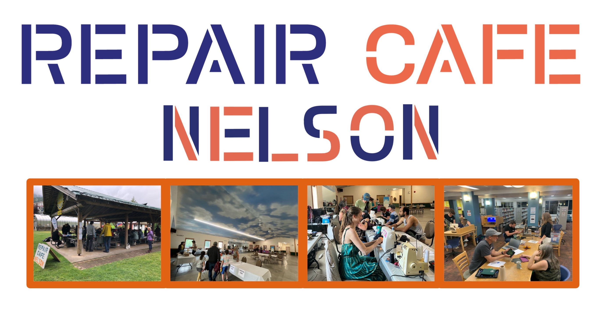
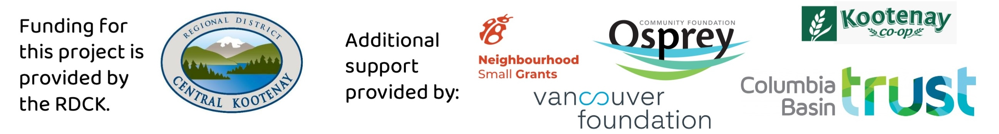

We are a volunteer-driven initiative in Nelson, BC, focused on reducing waste, sharing knowledge, and fostering a sense of community through the power of repair.
Want to get involved or join our mailing list?
For more information, check out our About page or follow us on Instagram and Facebook.
For Earth Days 2026, this special Reuse/Repair/Recycle event had other groups attending as well as the usual group of volunteer fixers.
Attendees: ~92
Items brought in: 104
Estimated total repaired item weight: 167 kg
Repair success rate: 83%
Our first event of 2026! This was held at the Nelson District Rod & Gun Club.
Attendees: ~85
Items brought in: 72
Estimated total repaired item weight: 100 kg
Repair success rate: 82.2%
Our third and final event of 2025! This was held at Christie Lee's Hall in Fairview.
Attendees: ~110
Items brought in: 107
Estimated total repaired item weight: 75 kg
Repair success rate: 78.5%
This was our second event in partnership with the Nelson Public Library as part of their Digital Detox series.
Attendees: ~40
Items brought in: 37
Estimated total repaired item weight: 85 kg
Repair success rate: 86.5%
This was our first event and we excited for all the support from the community! Thank you to the Osprey and Vancouver Foundation for providing us with a Neighbourhood Small Grant to fund the event, and the Kootenay Co-op for providing snacks to our volunteers.
Attendees: ~120
Items brought in: 109
Estimated total repaired item weight: 450 kg
Repair success rate: 72.5%
